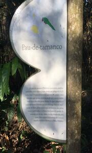
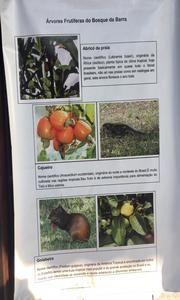
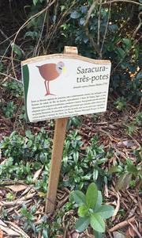
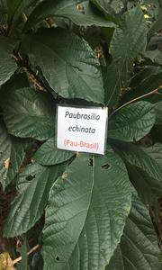
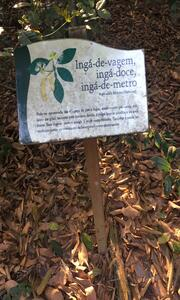

-

Pau-de-tamanco
Espécie ameaçada de extinção no Brasil. Sua madeira é usada para a produção de lápis e tamancos.
-

Baner do Bosque
O baner mostra as cutias e cajueiros que são típicos do Rio de Janeiro.
-

Borboleta-da-praia
Primeira espécie de inseto brasileiro a entrar na lista de espécies ameaçadas de extinção no Brasil.
-

Saracura-três-potes
As saracuras em geral eram chamadas pelos colonos italianos de beccaccia (se lê becatcha), devido ao seu jeito desengonçado ao levantar voo, à semelhança da galinhola europeia (Scolopax rusticola).
-

Pau-brasil
Considerada uma árvore de madeira nobre, com alto valor econômico nos dias de hoje. Muito utilizada para a produção de móveis, chamava atenção na época da exploração, principalmente pela sua coloração avermelhada.
-

Ingá
Existem mais de 300 espécies do fruto, que se diferenciam em relação ao tamanho e tipo dos nectários foliares. A maior diversidade é encontrada na floresta Amazônica. O ingá também se desenvolve em outras regiões de clima neotropical.